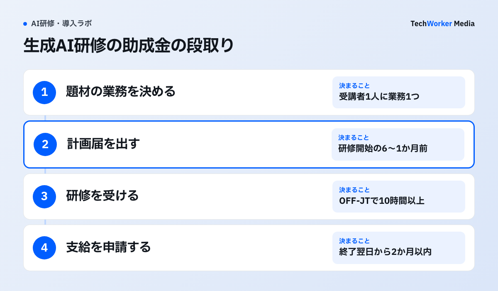
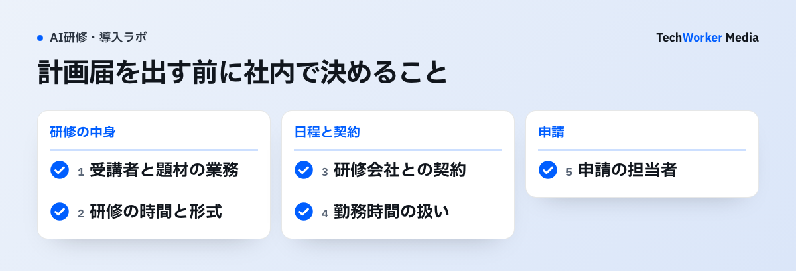

生成AI研修に使える国の主な助成金は、厚生労働省の人材開発支援助成金「事業展開等リスキリング支援コース」です。中小企業は研修の経費の75%と、受講1時間あたり1,000円の賃金が助成されます。ただし、2026年8月3日以降に出す計画届では、DX化の訓練のうち汎用的なプロンプトの作り方を学ぶだけの研修は対象外になりました（8月2日以前に契約した研修などには経過措置があります）。
- 対象になる研修：受講者の具体的な業務にそのまま使える内容で、職場を離れて受ける訓練（OFF-JT）が10時間以上のものです。
- 助成の額：中小企業は経費の75%（1人1研修30万円まで、100時間未満の場合）と、勤務時間中の受講1時間1,000円です。大企業は60%と500円です。
- 期限：計画届は研修を始める日の6か月前から1か月前までに出します。このコースは「令和8年度末までの時限措置」と書かれています。
厚生労働省の資料（2026年11月13日確認）をもとに、対象の見分け方、20人での助成額、年度末からの段取りをまとめます。支給の可否は労働局が判断します。
2026年8月3日から、何が変わりましたか？
対象にならない訓練が増え、eラーニングの回数に上限が付きました。生成AIでは、業務に結び付かない汎用的な研修が対象外になりました。
厚生労働省は変更点の案内で、生成AIの研修の対象と対象外の例を並べて示しています。
原文（日本語）助成対象：「生成AIを活用して商品提案書の構成案作成、文章生成、修正方法を学ぶ営業担当者向けの訓練」「営業担当者の具体的な業務に直結しており、そのまま活用可能な内容であるため助成対象」
助成対象外：「生成AIを利用するために汎用的なプロンプトの作り方を学ぶ訓練」「特定の業務への具体的適用を伴わない汎用的内容であるため助成対象外」
案内は、DX化・GX化の訓練のうち、職務に間接的に必要な知識・技能を学ぶものと、職業を問わず共通して必要なものを対象外にしました。分かれ目は「業務への具体的な適用があるか」です。同じ生成AIの研修でも、受講者の実際の業務を題材にすれば対象の考え方に沿い、使い方の一般論だけなら外れます。「DXの概念、デジタル技術の概要、データ活用の考え方を学ぶ訓練」も対象外の例に挙がっています。計画届が8月3日以降でも、研修会社との契約や申込みが8月2日以前なら、改正前の支給要領が適用されます。
もう1つの変更は、eラーニングの回数です。同じ人が受けられる訓練は年度3回までで、そのうちeラーニングは年度1回までになりました。8月3日以降に出した計画届の訓練から数えます。8月2日以前に研修会社と契約していた場合などには、経過措置があります。
どんな生成AI研修が対象になりますか？
受講者の業務に直結し、職場を離れて10時間以上受ける研修が基本です。ツールの操作説明だけの研修や、AIツールの導入費用は対象になりません。
| 研修の中身 | 扱い | 根拠 |
|---|---|---|
| 受講者の担当業務（提案書・文書・集計など）に生成AIを使う手順を学ぶ | 対象の考え方に沿う | 変更点の案内の「助成対象」の例 |
| 汎用的なプロンプトの作り方だけを学ぶ | 対象外 | 変更点の案内の「助成対象外」の例 |
| DXの概念、デジタル技術の概要だけを学ぶ | 対象外 | 同上 |
| 自社で使う機器・端末の操作説明 | 対象外 | パンフレットの「通常の事業活動」の例 |
| 研修とあわせて買うAIツールの導入費用 | 研修費は対象、ツール代は対象外 | パンフレットの不正受給の注意の例 |
出典：厚生労働省 変更点の案内（001731966）、詳細版パンフレット 令和8年8月3日版（001731978）。2026年11月13日確認。
形の条件もあります。訓練は職場を離れて受けるOFF-JTで、実際の訓練時間が10時間以上必要です。カリキュラムに対象外の内容が混ざると、その時間を除いて10時間以上が必要です。対面と同時双方向の研修は、受講者が訓練時間の8割以上を受ける必要があります。会社は、訓練の計画届とは別に「事業展開等実施計画」（様式第1-3号）を作ります。新しい事業やDX化など、何のための訓練かをここに書きます。
TechWorkerの研修は1製品で1日（6時間）が基本です。助成金を使う場合は、合計10時間以上になるよう回を分けて組みます。受講者が事前に自分の業務を1つ書き出し、研修でその業務の手順を作るため、上の「業務への具体的な適用」に沿う形です。対象になるかは、計画届を出す前に労働局へ確かめます。
いくら助成されますか？
中小企業は経費の75%と1時間1,000円、大企業は60%と500円です。経費の助成には、研修の時間に応じた1人あたりの上限があります。
| 中小企業 | 大企業 | |
|---|---|---|
| 経費の助成 | 75% | 60% |
| 賃金の助成（1人1時間） | 1,000円 | 500円 |
| 経費の上限（1人1研修、10〜100時間未満） | 30万円 | 20万円 |
| 経費の上限（100〜200時間未満） | 40万円 | 25万円 |
| 経費の上限（eラーニング・通信制） | 15万円 | 10万円 |
出典：厚生労働省 詳細版パンフレット 令和8年8月3日版「Ⅲ-1 助成額・助成率」「Ⅲ-2 支給限度額」（2026年11月13日確認）
賃金の助成は、勤務時間（所定労働時間）の中で受けた時間だけが対象です。eラーニング、通信制、定額制サービスの研修は、経費の助成だけで、賃金の助成はありません。1事業所が1年度に受けられる額は1億円までです。
受講料には注意点があります。助成金を申請する会社にだけ高い受講料を示す研修は、差額が対象外です。研修会社から返金や協賛金を受けた場合は、経費の助成の全体が対象外です（賃金の助成は対象になり得ます）。パンフレットは、「受講料が実質無料になり、利益も出る」と勧める営業に注意するよう呼びかけています。
研修の費用の組み方はCopilot研修の費用を比較するでも説明しています。
20人の研修では、いくらになりますか？
中小企業が20人に20時間の研修（1人10万円）を対面で行うと、経費150万円と賃金40万円で、合わせて190万円が助成されます。
次の条件で計算します。中小企業で、20人が1人20時間の研修を受けます。受講料は1人10万円（総額200万円）で、すべて勤務時間中に対面で受けます。
- 経費の助成：10万円×75%＝1人7.5万円です。20時間の研修の上限30万円には届きません。7.5万円×20人＝150万円です。
- 賃金の助成：1,000円×20時間×20人＝40万円です。
- 合計：190万円です。受講料200万円に対し、会社の持ち出しは差し引き10万円です（受講中の賃金そのものは別に払います）。
同じ研修をeラーニングで行うと、賃金の助成がなくなり、助成は経費の150万円だけです。しかもeラーニングは、同じ人について年度1回までです。助成の額で見ると、勤務時間中に対面かオンラインの同時双方向で受ける形が有利です。
契約・研修の稟議には、生成AIの利用料も必要です。主要4社の法人料金の比較表と稟議書の雛形は、下の枠から受け取れます。
いつまでに、何を出せばよいですか？
研修を始める日の6か月前から1か月前までに計画届を出し、研修が終わった日の翌日から2か月以内に支給を申請します。

計画届は都道府県労働局に出します。郵送の場合は、届いた日が提出日です。支給申請の期限は、パンフレットに「厳守」と書かれています。
今日（2026年11月13日）から逆算すると、次のとおりです。
- 今日、計画届を出す場合：研修を始められるのは、1か月後の12月13日以降です。
- 年度内の3月31日に研修を始める場合：計画届の期限は2月28日です（パンフレットの例と同じ日付）。2027年2月28日は日曜のため、期限は翌開庁日になりますが、余裕をもって出します。
- 3月31日に研修を終える場合：支給申請は4月1日から5月31日までです。
このコースは、パンフレットに「令和4年～8年度の期間限定の助成金」「令和8年度末までの時限措置」と書かれています。ただし、年度末までに計画届を出せばよいのか、研修を終える必要があるのかは、パンフレットに書かれていません。年度をまたぐ研修を考えている場合は、計画届を出す前に労働局へ確かめます。
令和9年度以降は、どうなりますか？
2026年11月13日の時点では決まっていません。厚生労働省の概算要求の資料には、このコースの名前がありません。
厚生労働省が2026年8月に出した「令和9年度概算要求の概要」では、人材開発支援助成金の要求額は602億円（前年度539億円）です。その表は「訓練実施コース（一般訓練・特定訓練・団体訓練）」と「休暇制度導入コース」で組まれています。「事業展開等リスキリング支援コース」の行はありません。
概算要求は、予算の案を作る前の要求です。どのコースがどの条件で残るかは、政府の予算案と、その後に出る支給要領で決まります。今年度の制度を使うなら、今年度の条件で計画を組み、来年度の条件は発表を待って確かめます。
計画届を出す前に、社内で何を決めますか？
受講者と題材の業務、研修の時間と形式、研修会社との契約の時期、勤務時間の扱い、申請の担当者の5つです。あわせて、社内の推進者と育成の計画も用意します。

- 受講者と題材の業務：誰が、どの業務で生成AIを使うかを1人1つ決めます。訓練の内容に沿って受講者を選ぶことが求められます。
- 研修の時間と形式：OFF-JTで10時間以上にします。賃金の助成を受けるなら、勤務時間中に対面か同時双方向で行います。
- 研修会社との契約の時期：計画届は研修開始の1か月前が期限です。研修会社のカリキュラムと見積りを、その前にそろえます。
- 勤務時間の扱い：勤務時間外や休日に行うと、その時間は賃金の助成の対象外です。
- 申請の担当者：計画届と支給申請は会社が出します。社会保険労務士に頼むかも決めます。
この5つとは別に、計画届を出す日までに職業能力開発推進者を選び、事業内職業能力開発計画を作って社員に知らせておく必要があります。
研修会社の比べ方は生成AI研修を外部委託するRFPに、Claude Codeの研修の組み方はClaude Codeの法人研修にまとめています。
よくある質問
ツールの名前では決まりません。受講者の具体的な業務にそのまま使える内容なら、対象の考え方に沿います。DX化の訓練として汎用的なプロンプトの作り方だけを学ぶ研修は、2026年8月3日以降に出す計画届では対象外です（経過措置あり）。支給の可否は労働局が判断します。
講師と同時にやり取りする形（同時双方向）で、勤務時間中に受けた時間は対象です。eラーニングや通信制、定額制サービスの研修は経費の助成だけで、賃金の助成はありません。
計画届を、研修を始める日の6か月前から1か月前までに都道府県労働局へ出します。研修が終わったら、翌日から2か月以内に支給を申請します。
されません。厚生労働省のパンフレットは、AI研修の費用は対象経費、AIツールの導入費用は対象経費ではないと書いています。
2026年11月13日の時点では決まっていません。パンフレットには令和8年度末までの時限措置と書かれ、令和9年度の概算要求の資料にこのコースの名前はありません。予算案と支給要領の発表を待って確かめます。
次の一歩は何から始めればよいですか？
受講する人数と題材の業務を決め、研修を始めたい日から1か月以上前に計画届を出せるよう、研修会社の見積りを取ります。
- 受講する部署と人数を決め、1人1つずつ題材の業務を書き出します。
- 研修を始めたい日を決め、その1か月前の日付を計画届の期限として置きます。
- 研修会社にカリキュラムと見積りを頼み、労働局に対象になるかを確かめます。
TechWorkerでは、助成金を使う前提で、人数と研修費から助成の目安を試算し、10時間以上になる研修の組み方を見積りの中でご案内します。申請は御社で行い、支給の可否は労働局が判断します。
出典と確認範囲
確認日：2026年11月13日。助成金の条件は変わるため、計画届を出す時点で厚生労働省の最新の資料と労働局で確認してください。20人の計算は、すべて勤務時間中に対面で受け、条件を満たした場合のTechWorkerの試算です。対象になるか、いくら支給されるかは労働局が判断します。令和9年度の制度は2026年11月13日時点で決まっていません。